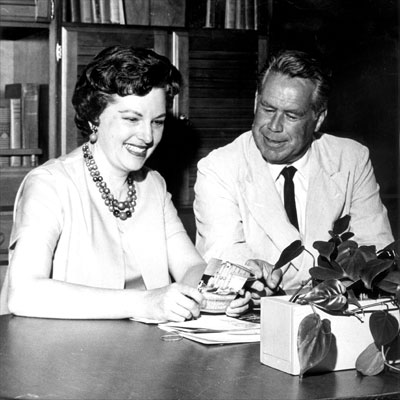

TV
Show of Homes
(TV
Showcase
of
Homes)
April 2, 1960 - June 21, 1970
Bob Brown was the original host of
this program, which took viewers on tours of various quality homes that
were on the market in the Portland area. Home buying tips and
suggestions were also offered. Later, hosting duties were taken over
by Barbara Angell and Charlie LaFranchise, and after that, Barbara Angell
and Gene Brendler.

|
It’s
Open
House
every
weekend
on
KPTV,
Channel
12,
when
Barbara
Angell
and
Charlie
La
Franchise
appear
on
"TV
Show
of
Homes."
Now
going
into
its
third
year,
the
program
shows
homes
available
for
sale
in
the
Portland
metropolitan
area.
Barbara,
a
professional
home
economist,
gives
an
on
camera
tour
of
each
house,
commenting
on
features
of
particular
interest
to
prospective
homeowners,
while
Charlie
gives
the
masculine
point
of
view.
New
feature
of
the
show
will
be
an
aerial
tour
of
various
living
areas
showing
home
locations
in
relation
to
schools,
shopping
areas
and
transportation.
The
program
is
seen
Saturdays
and
Sundays
at
12:30
on
KPTV,
Channel
12.
Article
in
TV
Prevue,
August
5,
1964
|
| TV
Show of Homes BROADCAST HISTORY |
|
APR 1960 - MAY 1960: SUN
12:00PM-12:30PM
MAY 1960 - JUN 1960: SUN
1:00PM-1:30PM
JUL 1960 - SEP 1960: SUN 12:30PM-1:30PM
SEP 1960 - : SAT 4:00PM-5:00PM
SEP 1960 - : SUN 11:00AM-12:00PM
JAN
1961
-
:
SAT
12:30PM-1:30PM
FEB 1962 - MAY 1962: SUN 12:30PM-1:30PM
AUG
1962 -
OCT 1962: SAT
12:30PM-1:30PM
AUG
1962 - : SUN 12:30PM-1:30PM
FEB
1963 - AUG 1963: SAT 10:00AM-11:00AM
FEB 1963 - AUG 1963: SUN 12:30PM-1:30PM|
OCT 1963 - NOV 1963: SAT 9:30AM-10:30AM
OCT 1963 - : SUN 11:00AM-12:00PM
MAY 1964 - : SAT-SUN 12:30PM-1:30PM
OCT 1964 - : SAT 12:30PM-1:30PM
OCT 1964 - : SUN 1:00PM-2:00PM
DEC 1964 - : SAT 12:30PM-1:30PM
DEC 1964: SUN 1:00PM-2:00PM
JAN 1965 - : SAT-SUN 12:00PM-1:00PM
MAY 1965 - JUL 1965: SAT-SUN 12:00PM-1:00PM
NOV 1965 - DEC 1965: SAT 12:00PM-1:00PM
NOV 1965 - : SUN 12:00PM-1:00PM
DEC
1966
-
SAT-SUN 12:00PM-12:30PM
FEB 1967 - SEP 1968: SAT-SUN 12:00PM-12:30PM
DEC 1968 - : SUN 11:30AM-12:00PM
JUN 1969 - NOV 1969: SUN 11:30AM-12:00PM
JAN 1970 - JUN 1970: SUN 11:30AM-12:00PM |

  
This
page
last
updated
on
August 17, 2025
|